St. Bernard’s Altar Servers Old Boys Association
Member Directory
Member Directory
Stay connected with your classmates and explore member profiles.

Year: 1993
DOB: June 6
Occupation: Personal

Year of Induction: 1999
DOB: August 10
Occupation: Civil Engineer

Year Of Induction: 2000
DOB: November 27
Occupation: Civil Engineer

Year of Induction: 2001
DOB: April 30
Occupation: Civil Servant

Year Of Induction: 2003
Occupation: Assistant Lecturer, Department Of Educational Management, UNICAL.

Year Of Induction: 2003
DOB: October 6
Occupation: Land Surveyor (Federal Republic of Nigeria)

Year Of Induction: 2003
Occupation: Civil Engineer

Year Of Induction: 2003
DOB: August 6
Occupation: Tailor / Interior and Exterior Design

Year of Induction: 2003
DOB: December 23
Occupation: Hotel Manager

Year of Induction: 2003
DOB: May 3
Occupation: Student

Year Of Induction: 2004
Occupation: Lecturer, Chemistry Department UNICAL

Year of Induction: 2004
DOB: June 6
Occupation: Airlines Services

Year of Induction: 2004
DOB: April 10
Occupation: Fashion Designer

Year Of Induction: 2005
DOB: June 6
Occupation: Driver, Kebb Design, Blocks Moulding

Year of Induction: 2005
DOB: January 2
Occupation: Scientific Officer Department of Food safety and nutritional science, Ministry of Health, Cross River State

Year Of Induction: 2006
DOB: October 12
Occupation: Front-End Developer/ Web Designer
Year Of Induction: 2006
DOB: September 25
Occupation: Photographer, Videographer, Mushroom Farmer

Year Of Induction: 2007
Occupation: Business Man

Year of Induction: 2007
DOB: March 26
Occupation: Student

Year Of Induction: 2007
Occupation: Engineer

Year Of Induction: 2009
Occupation: Business (Motor Parts)

Year Of Induction: 2010
DOB: April, 10
Occupation: Civilian staff Nigerian police force education unit calabar.

Year Of Induction: 2011
Occupation: Student At UNICAL

Year of Induction: 2012
DOB: October 1
Occupation: Student

Year of Induction: N/A
Occupation: Mechanical Engineer
More members will be added soon. Stay tuned.
Moments from our altar serving days, visitations, sit-outs, and gatherings
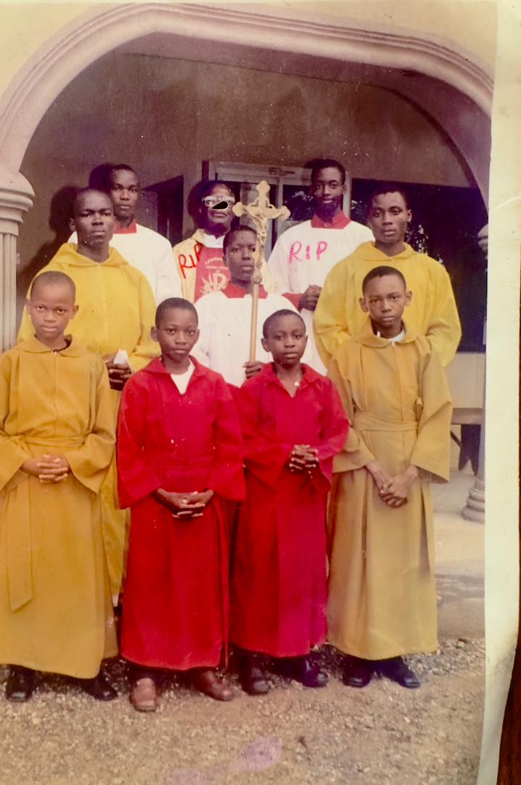
Group memory – In loving remembrance of our departed brother and Priest.
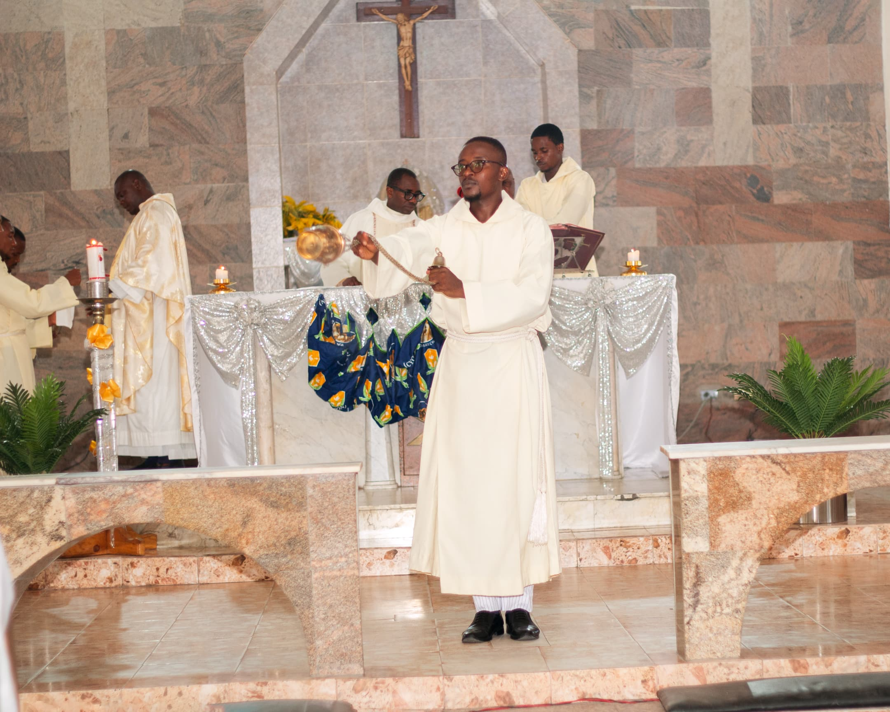
Thurifer - Charles Okon
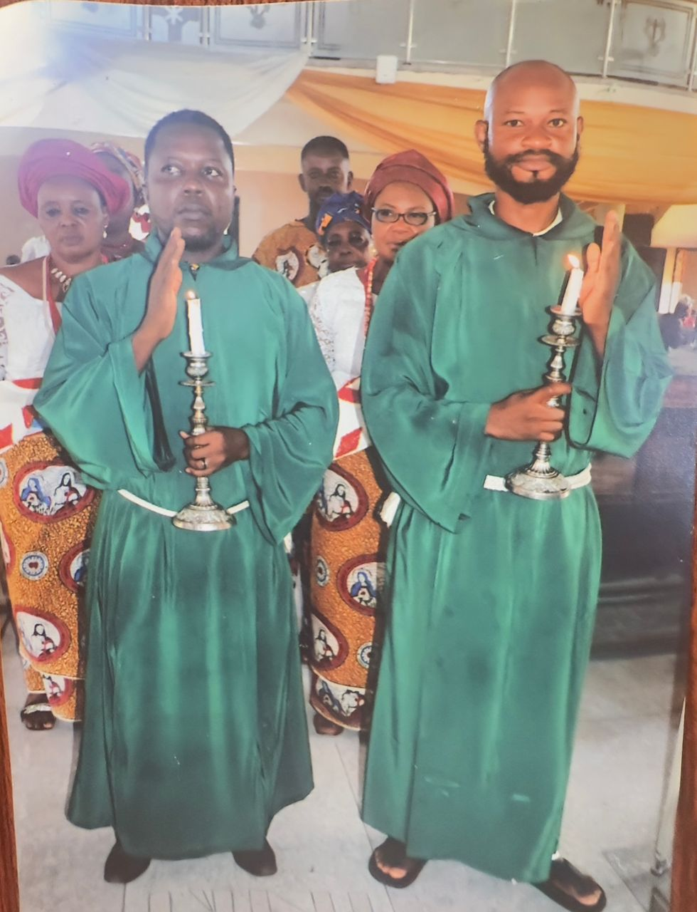
Former Altar Servers Leadership
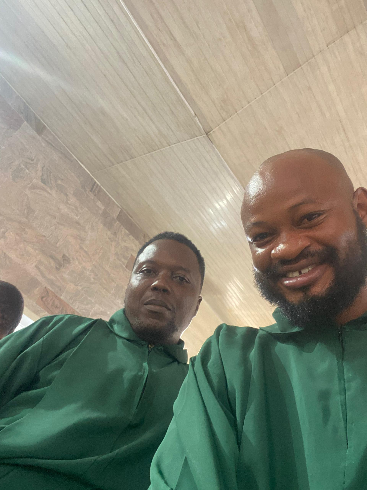
Selfie Moment
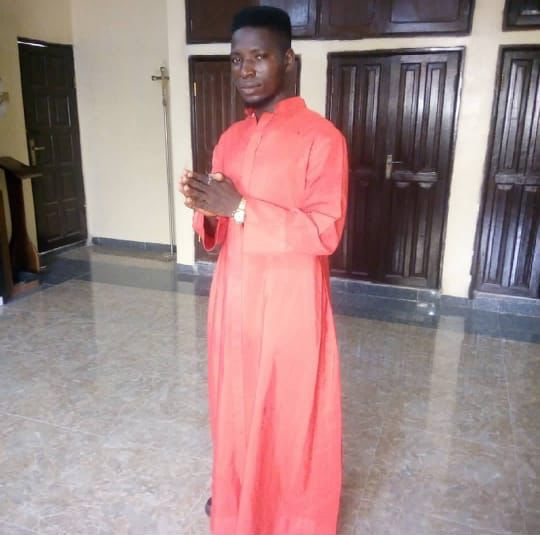
Former Altar Servers President - Emeka Samson
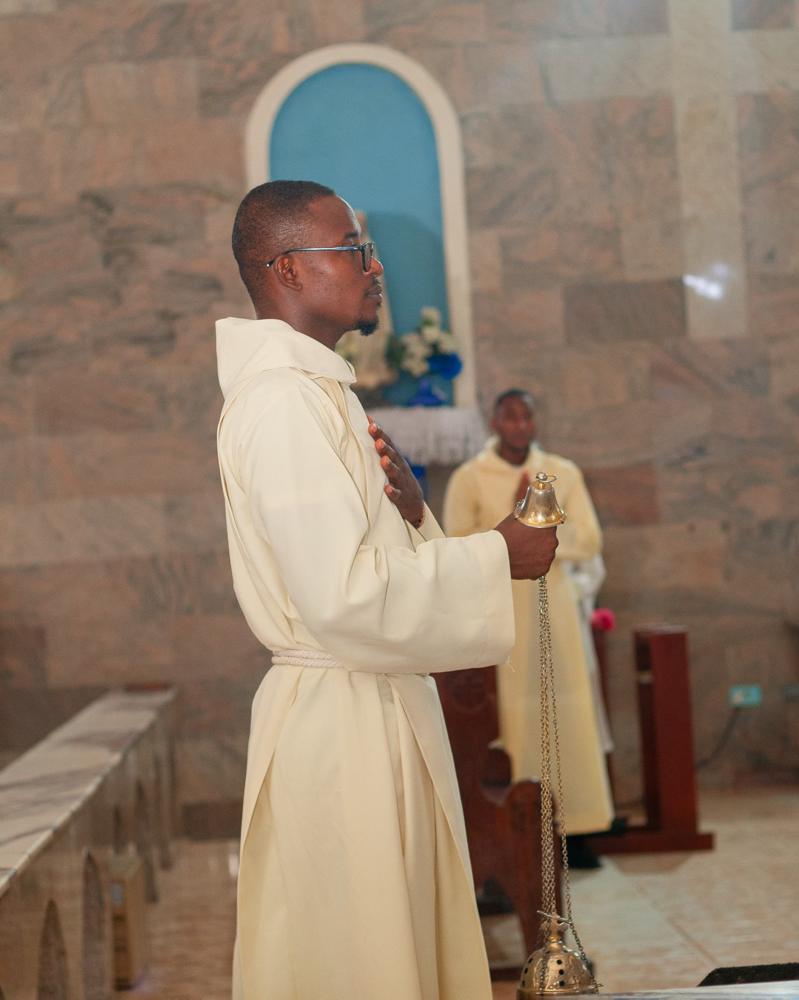
Former CYON President - Charles Okon
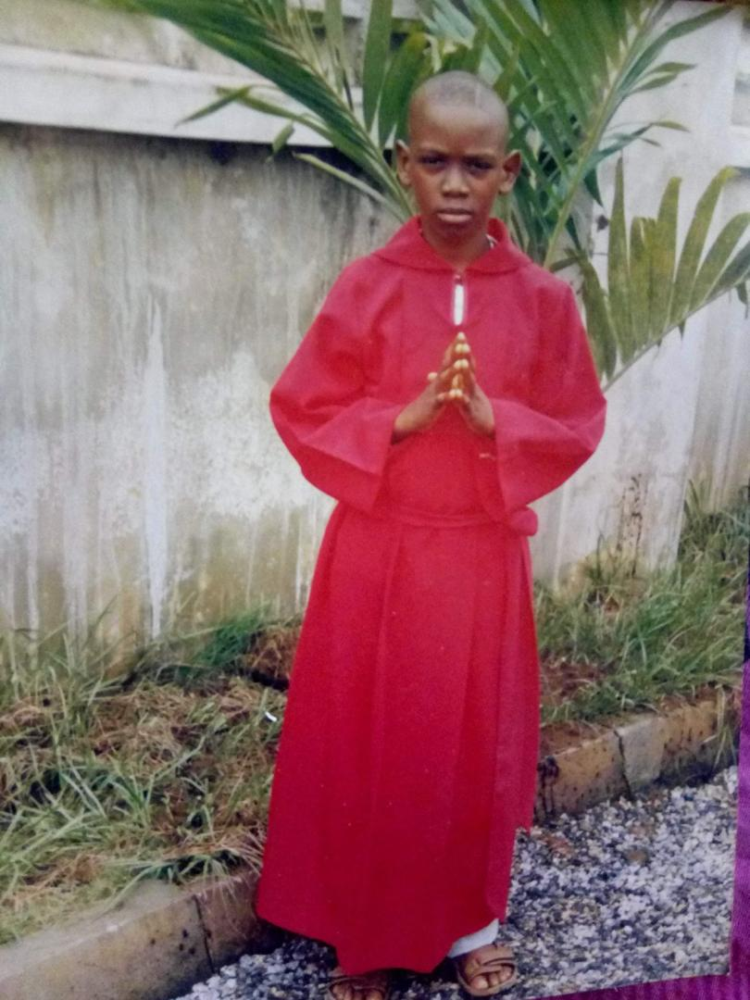
Early days of serving - Thomas Besong
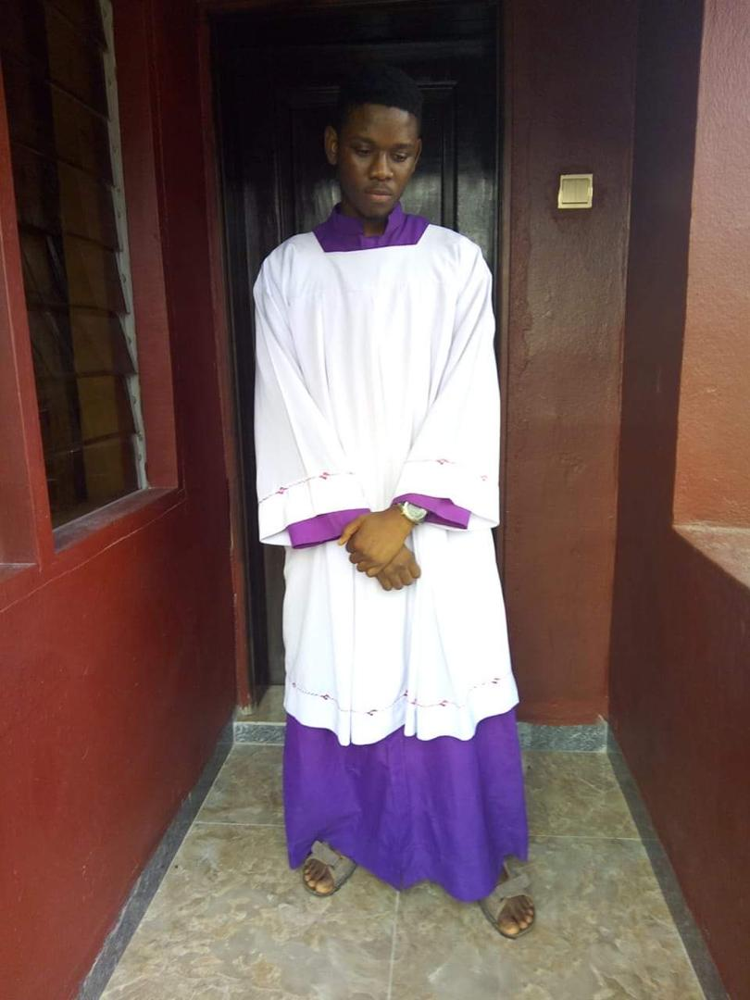
Years later - Thomas Besong
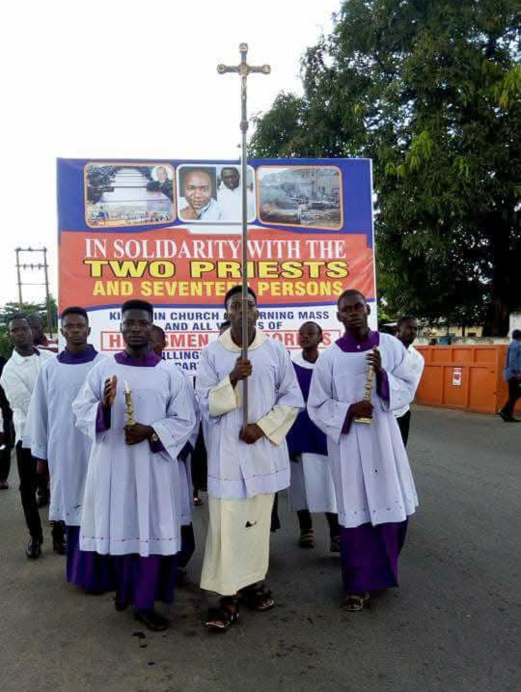
Group Memory
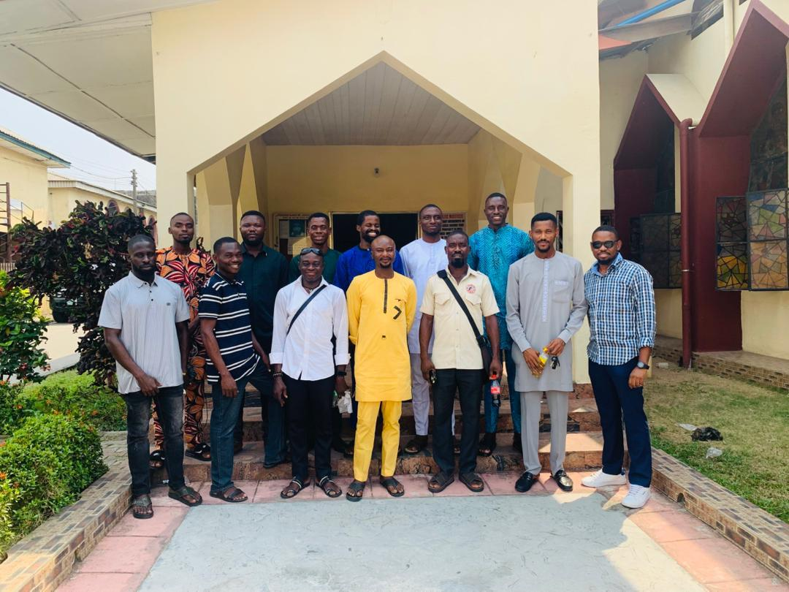
After the first ever physical meeting
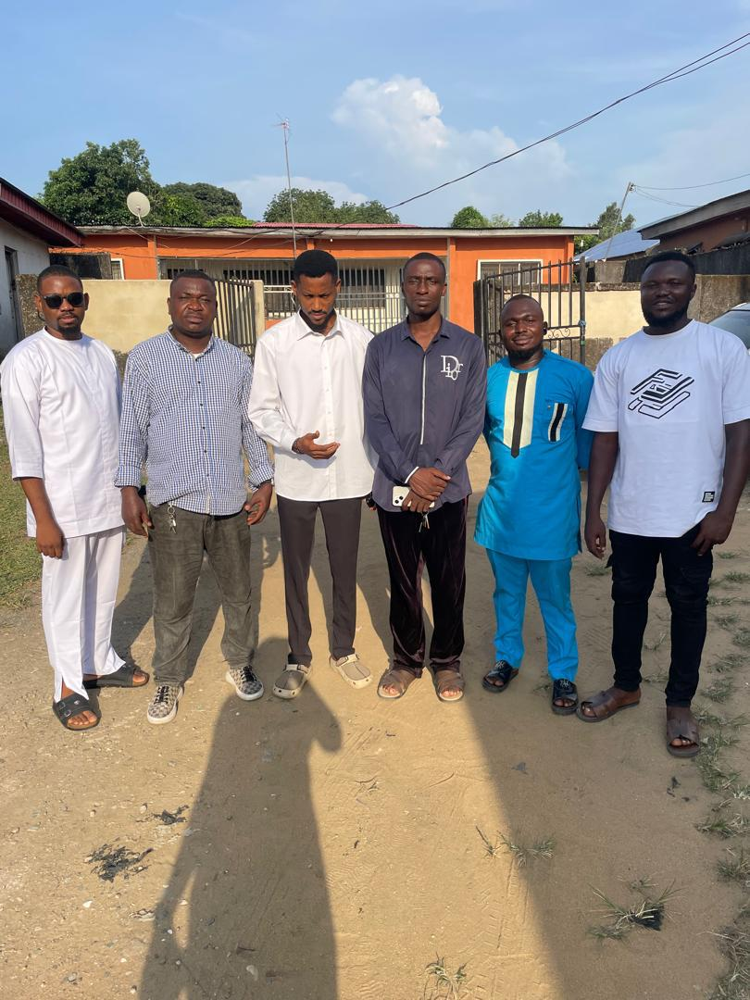
Condolence visit to the family of Sir Maurice Ekpeyong
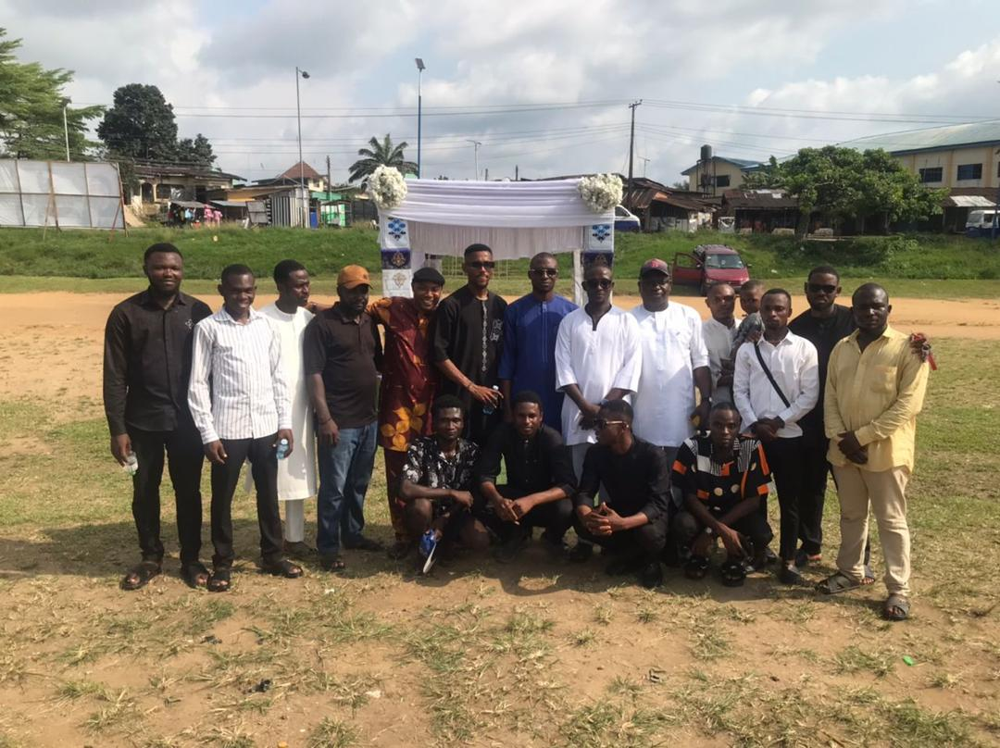
Funeral of Charles Okon’s mother
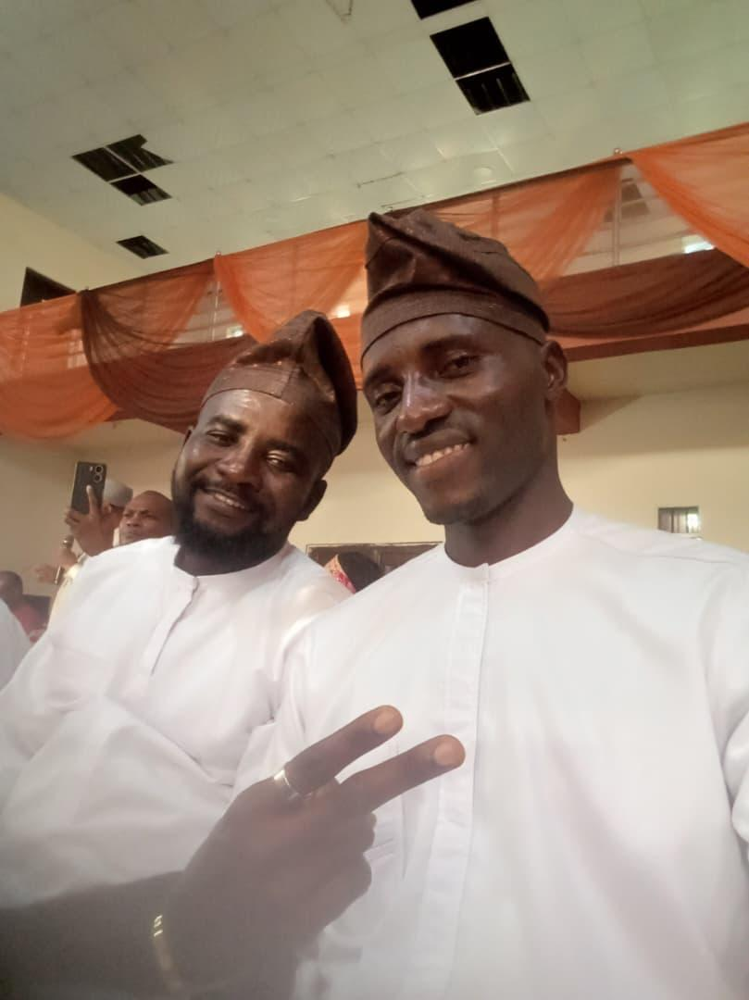
Former Altar Servers' Presidents
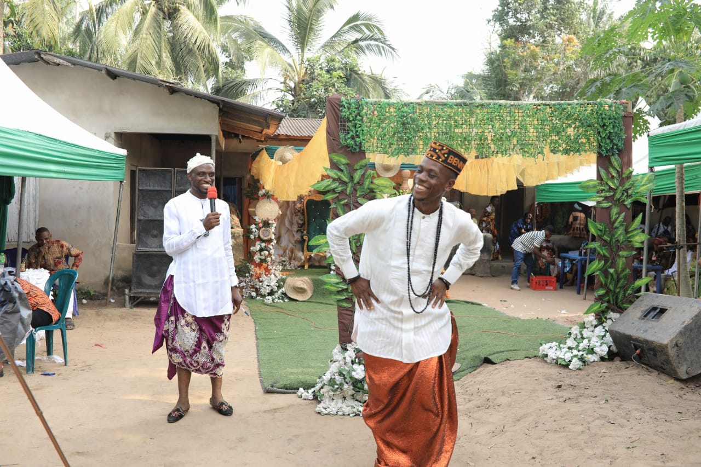
Traditional Marriage of Bernard Peter
Group Memory
Old Boys Outing @ Palladium
The Catholic Altar Servers Association of Nigeria Old Boys St. Bernard's Parish is a network of former altar servers coming together to stay connected and support one another.
This platform was created to help members share their profiles, stay in touch, and strengthen our bond as a community.
“Nearer to the Altar!”
Nearer to GOD!